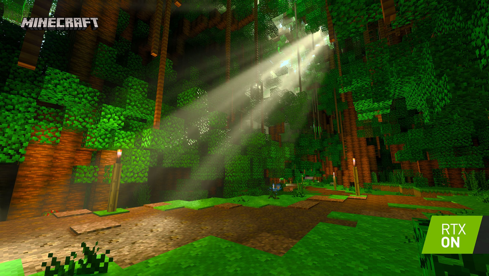
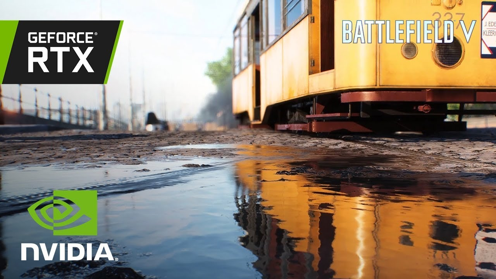

Ray Tracing Fundamentals encompasses the amazing technological advancement of ray tracing. Displaying the astonishing difference it offers for applications and analyzing the basics of the physics and mathematical calculations used.
Ray Tracing Fundamentals will hopefully provide entertainment and create curiosity for any individual, no matter their previous knowledge. The basics behind the mathematics, physics and programming needed to render ray-traced images will be studied.
The processing of an image that simulates light refractions, reflections, and shadows. It allows for the creation of a 2-D picture of a 3-D world.
 